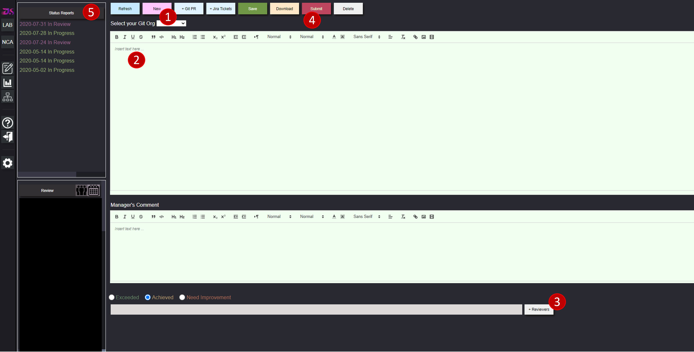

Help
Reporting
How to submit reports?"

To submit the report, do the followings:
- Click on new button.
- Type your report.
- Add reviewer.
- Click on submit
-
Click on Status report listbox heading, to see your report you submitted. A tool tip will appear showing you the status of the report. Different color hint different
statuses of the report. Tool tips tell you report status.
Watch a two minute video to learn how to use report module.
To have Dev Star function properly, administration of the organization has to do the followings:
- Install webhooks. Send the mail to support@Dev-Star.com for details
- All users of Organization must login once in Dev Star.
- Connect every user Git, Azure Boards, Jira Id's.
- Create the Org Structure.
- Connect Git Orgs with Tenant. Contact the Dev Star Admin for this last step.
Connect Your Id's With Dev Star
Log in Dev Star. Click on "Gear" Icon on the left Nav and then choose "Connect Your Id's"
Create the Org Chart
This step is very important. With the org chart, various security settings are implemented. Org chart is used to decide which user can see who's status reports. To create
the Organization Chart. Log in Dev Star. Click on "Org" Icon on the left Nav.